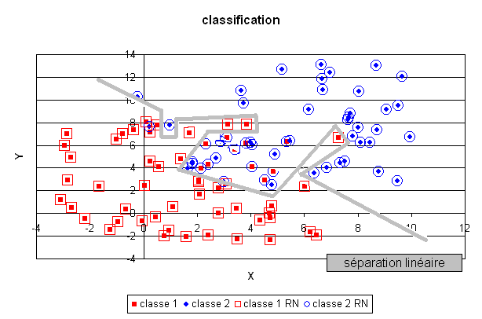

La classification#
Comme la régression, la classification consiste aussi à trouver le lien entre une variable \(X\) et une variable aléatoire discrète suivant une loi multinomiale \(Y\).
Problème P1 : Classification
Soit une variable aléatoire \(X\) et une variable aléatoire discrète \(Y \in \N\), l’objectif est d’approximer la fonction \(\esp\pa{Y | X} = f\pa{X}\). Les données du problème sont un échantillon de points : \(\acc { \pa{ X_{i},Y_{i} } | 1 \infegal i \infegal N }\) avec \(\forall i \in \ensemble{1}{N}, \; Y_i \in \ensemble{1}{C}\) et un modèle paramétré avec \(\theta\) :
avec \(n \in \N\), \(h\) est une fonction de paramètre \(\theta\) à valeur dans \(\cro{0,1}\) et vérifiant la contrainte : \(\sum_{c=1}^C h(\theta,X,c) = 1\).
Le premier exemple est une classification en deux classes, elle consiste à découvrir le lien qui unit une variable aléatoire réelle \(X\) et une variable aléatoire discrète et \(Y \in \acc{0,1}\), on dispose pour cela d’une liste :

Il n’est pas facile de déterminer directement une fonction \(h\) qui approxime \(Y | X\) car \(h\) et \(Y\) sont toutes deux discrètes. C’est pourquoi, plutôt que de résoudre directement ce problème, il est préférable de déterminer la loi marginale \(\pr{Y=c|X} = f \pa{X,\theta,c}\). \(f\) est alors une fonction dont les sorties sont continues et peut être choisie dérivable. Par exemple, \(f\) peut être un réseau de neurones dont les sorties vérifient :
Le réseau de neurones utilisé pour cette tâche est légèrement différent du précédent, il sera présenté ultérieurement. Un plan a été divisé en deux demi-plan par une droite délimitant deux classes, le réseau de neurones dont la couche cachée contient deux neurones linéaires, a retrouvé cette séparation malgré les quelques exemples mal classés.
En revanche, un réseau de neurones comportant trop de coefficients aura tendance à apprendre par coeur la classification et les quelques erreurs de classification comme le montre la figure suivante. La séparation produite par le réseau de neurones est de manière évidente non linéaire puisqu’aucune droite ne peut séparer les deux classes déterminées par cette fonction. Cette classe de modèles permet donc de résoudre des problèmes complexes en gardant toutefois à l’esprit, comme dans le cas de la régression, qu’il n’est pas moins de facile de dénicher le bon modèle que dans le cas linéaire.